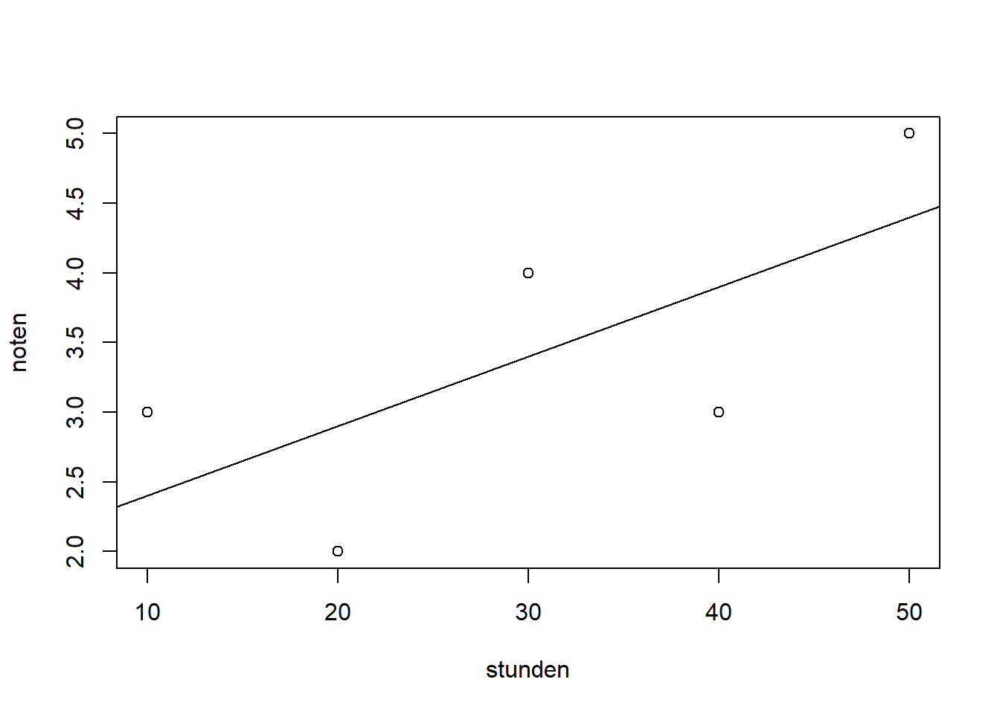
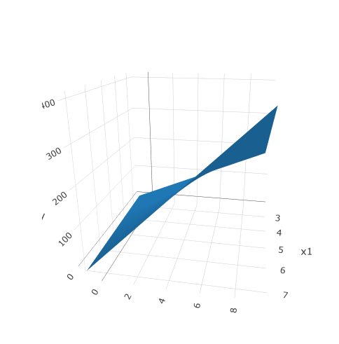

# Erstellen Sie ein Beispieldatensatz
stunden <- c(10, 20, 30, 40, 50)
noten <- c(3, 2, 4, 3, 5)17 Lineare Regression - Die Basics
Hinweis: Der folgende Text wurde von chatGPT erstellt. Zusätzlich wurden Fehler eingebaut, um die Bearbeitung der Webseite mit GitHub zu üben. Der Text sollte so nicht in die finale Webseite übernommen werden!
- (BRITTA?): entferne die zusätzlichen Kommas im folgenden Text:
Eine lineare Regression ist ein statistisches Modell, das verwendet wird, um eine lineare Beziehung zwischen einer abhängigen Variablen und einer oder mehreren unabhängigen Variablen zu beschreiben. Eine lineare Regression versucht eine gerade Linie zu finden, die am besten die Beziehung zwischen den Variablen beschreibt.
- (Vivian?): Füge ein Komma zwischen “sein” und “dass” ein.
Ein einfaches Beispiel in R könnte sein, dass wir die Beziehung zwischen der Anzahl der Stunden, die ein Schüler lernt, und seiner abschließenden Note untersuchen wollen. Wir könnten einen Datensatz mit den Stunden, die jeder Schüler lernt, und seiner abschließenden Note erstellen und dann die lineare Regression verwenden, um die beste gerade Linie zu finden, die diese Daten beschreibt.
Hier ist ein Beispiel für R Code, um eine lineare Regression durchzuführen:
- (Vivian?): Im folgenden Code wird sowohl der Datensatz erstellt als auch eine lineare Regression gerechnet und ein Plot erstellt. Teile den Code in drei Blöcke mit kurzen Beschreibungen im Text anstelle der Kommentare im Code. Ein Block erstellt die Daten, einer fittet die lineare Regression und einer plottet die Linie
- Erstellen Sie ein Beispieldatensatz
- Erstellen Sie ein lineares Modell
modell <- lm(noten ~ stunden)
summary(modell) # Anzeigen der Modellparameter
Call:
lm(formula = noten ~ stunden)
Residuals:
1 2 3 4 5
0.6 -0.9 0.6 -0.9 0.6
Coefficients:
Estimate Std. Error t value Pr(>|t|)
(Intercept) 1.900 0.995 1.910 0.152
stunden 0.050 0.030 1.667 0.194
Residual standard error: 0.9487 on 3 degrees of freedom
Multiple R-squared: 0.4808, Adjusted R-squared: 0.3077
F-statistic: 2.778 on 1 and 3 DF, p-value: 0.1942- Visualisieren Sie das Modell mit den Daten
plot(stunden, noten)
abline(modell)
- (Clara?): ersetze das “ue” in Schueler durch “ü”. Der Satz ist etwas lang. Schreib ihn so um, dass es zwei Sätze sind.
In diesem Beispiel würde die Ausgabe des Modells zeigen, dass die beste gerade Linie, die die Beziehung zwischen den Stunden und den Noten beschreibt, eine negative Steigung hat, was bedeutet, dass die Noten abnehmen, wenn die Schueler mehr Stunden lernen.
17.1 Multiple lineare Regression
Eine multiple lineare Regression mit Interaktionsterm ist eine statistische Methode, die verwendet wird, um die Beziehung zwischen mehreren unabhängigen Variablen (X1, X2, X3, etc.) und einer abhängigen Variablen (Y) zu untersuchen. Ein Interaktionsterm ist ein Produkt zweier oder mehrerer unabhängiger Variablen, das in die Regressionsgleichung eingeschlossen wird, um die Wechselwirkung zwischen ihnen zu berücksichtigen. Ein Beispiel für eine Regressionsgleichung mit einem Interaktionsterm wäre:
Y = b0 + b1X1 + b2X2 + b3X1X2 + b4*X3 + e
- (Clara?): Die folgende Beschreibung einer Interaktion ist etwas kurz. Baue den Block ein bisschen aus (+1-2 Sätze). Es muss nicht korrekt sein; denk Dir was aus.
In diesem Beispiel würde das Interaktionsterm X1*X2 die Wechselwirkung zwischen X1 und X2 berücksichtigen. Der Koeffizient b3 gibt an, wie stark die Änderung von Y durch die Änderung von X1 beeinflusst wird, wenn X2 einen bestimmten Wert hat.
Hier ein Beispiel:
- (Britta?): Im folgenden Beispiel verwenden wir den Datensatz linear_regression_example.csv. Der ist aber bisher noch nicht in unserem Bookdown-Projekt! Füge den Datensatz hinzu (siehe Mail). Eine Beschreibung des Hinzufügens von Datensätzen ist in der Dokumentation.
data <- read.csv("linear_regression_example.csv")
# Perform multiple linear regression with interaction term
model = lm(y ~ x1 + x2 + x3,
data = data)summary(model)
Call:
lm(formula = y ~ x1 + x2 + x3, data = data)
Residuals:
Min 1Q Median 3Q Max
-0.9359 -0.3389 -0.0543 0.2949 1.1583
Coefficients:
Estimate Std. Error t value Pr(>|t|)
(Intercept) 2.87341 0.45172 6.361 6.79e-09 ***
x1 2.83427 0.08839 32.064 < 2e-16 ***
x2 3.80970 0.14335 26.576 < 2e-16 ***
x3 0.53978 0.02862 18.858 < 2e-16 ***
---
Signif. codes: 0 '***' 0.001 '**' 0.01 '*' 0.05 '.' 0.1 ' ' 1
Residual standard error: 0.4734 on 96 degrees of freedom
Multiple R-squared: 0.9987, Adjusted R-squared: 0.9987
F-statistic: 2.464e+04 on 3 and 96 DF, p-value: < 2.2e-16Wir können die Interaktion auch graphisch darstellen:
- (Vivian?): Im folgenden wird eine Figure (interaction_plot.png) eingefügt, die es bisher noch nicht gibt. Diese soll im Ordner figures/lineare_regression/bilder liegen. Füge die Ordner lineare_regression/bilder hinzu. Speichere die Datei “interaction_plot.png” im neuen Ordner.
